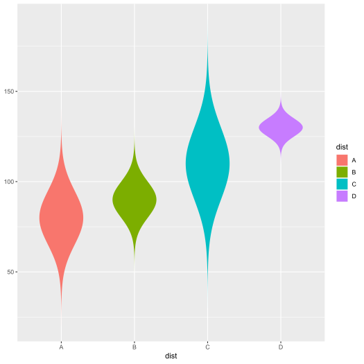
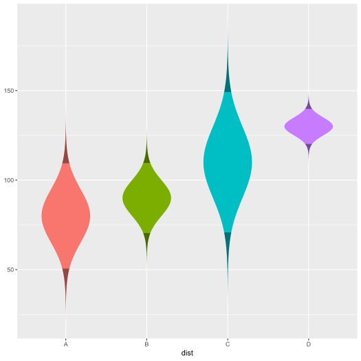

The ggnormviolin package uses ggplot2 to create normal violin plots with specified means and standard deviations.
Installation
To install the development version of ggnormviolin, you need to check if devtools is installed. If not, run this:
Once you are sure you have devtools installed, you can install the development version of ggnormviolin from GitHub by running this code:
Example
Suppose there are 4 hypothetically normal distributions with specific means and standard deviations. They can be plotted like so:
library(ggplot2)
library(ggnormviolin)
d <- data.frame(
Distribution = c("A", "B", "C", "D"),
Distribution_mean = c(80, 90, 110, 130),
Distribution_sd = c(15, 10, 20, 5)
)
ggplot(data = d, aes(x = Distribution)) +
geom_normviolin(aes(mu = Distribution_mean,
sigma = Distribution_sd),
width = 0.25,
fill = "dodgerblue") 
Suppose we want to highlight the two tails of the distributions. We can add a second layer with just the tails represending the outermost 2.5% of the distributions. Set the p_tails to specify the total aread of the tails. Thus, if p_tails = 0.05, each tail will represent the outermost 2.5% of the distributions (i.e, 0.05 = 2 &mult; 0.025).
ggplot(data = d, aes(x = Distribution)) +
geom_normviolin(aes(mu = Distribution_mean,
sigma = Distribution_sd),
width = 0.25, fill = "dodgerblue") +
geom_normviolin(aes(mu = Distribution_mean,
sigma = Distribution_sd),
width = 0.25, p_tail = 0.05, fill = "gray30")